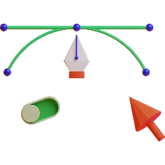

A startup or start-up is a company or project undertaken by an entrepreneur to seek, develop, and validate a scalable business model.

Product Design
Startups typically begin by a founder (solo-founder) or co-founders who have
Branding
Startups typically begin by a founder (solo-founder) or co-founders who have
Coding & Programming
Startups typically begin by a founder (solo-founder) or co-founders who have